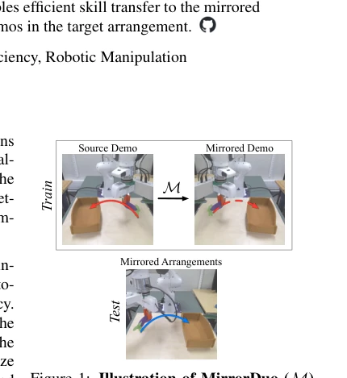
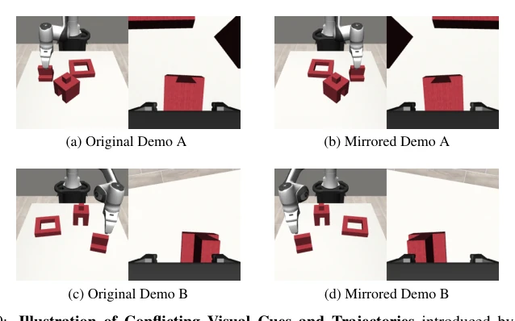
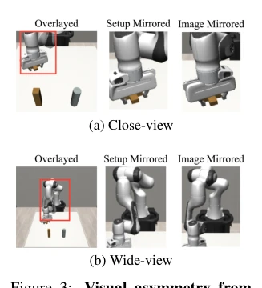
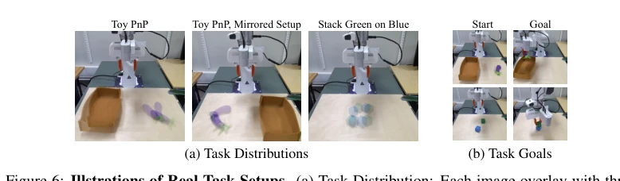
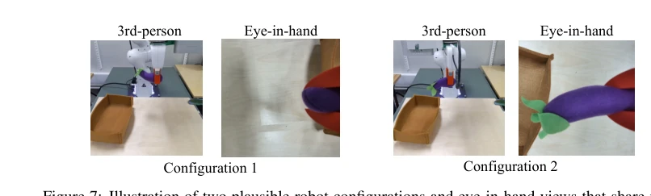
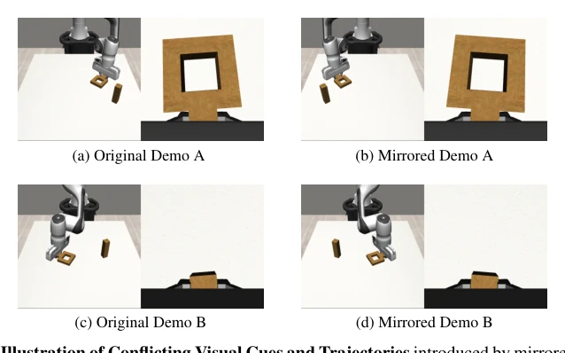

The name 'MirrorDuo' is quite clever; mirrors in pairs, data doubles, sounding like a 'buy one get one free' promotion. But don't get too excited, this 'mirroring' is not that simple in 2D images. The paper attempts to use reflection symmetry to solve the data scarcity problem in behavior cloning; theoretically attractive, but practically a bit 'lean'. The biggest criticism is that although a complex reflection-equivariant diffusion policy (MirrorDiffusion) was proposed, the experimental results proved it wrong: in real-world scenarios with severe visual asymmetry, simple data augmentation (MirrorAug) combined with pretrained weights and random background overlay actually performed better than the carefully designed equivariant network. This is like spending a lot of money to make a bulletproof vest, only to find that wearing a thick cotton jacket is warmer. Furthermore, for cases where camera extrinsics are unknown, although a local coordinate solution was proposed, the effect remains questionable when facing side views or views with severe occlusion. Overall, this is a paper with solid theory but slightly 'conservative' practice, proving that in embodied AI, sometimes 'earthy methods' work better than 'precision instruments'.
研究动机Motivation
基于图像的模仿学习（BC）虽然 scalable，但收集多样化演示数据成本极高，尤其是当目标物体位置或场景布局存在空间变化时。现有 3D 输入方法（如点云）可以利用 SE(3) 刚体变换的等变性提升数据效率 [3, 4, 5]，但将 3D 变换直接应用到 2D 图像往往效果不一致，除非是简化的俯视视角 [6]。虽然已有工作尝试利用 SO(2) 旋转对称性 [7]，但增益有限且局限于域内设置。更深层的问题是，许多操作任务天然具有镜像变体（如左侧抓取对应右侧抓取），这种图像空间的反射对称性未被充分挖掘。现有镜像相关工作 [8, 9] 多局限于简化设置（如 SE(2) 动作），未解决未见镜像场景的泛化问题。因此，如何在不依赖 3D 输入的情况下，有效利用反射对称性来降低数据收集成本，成为亟待解决的关键问题。
Although image-based imitation learning (BC) is scalable, collecting diverse demonstration data is extremely costly, especially when target object positions or scene layouts involve spatial variations. Existing 3D input methods (such as point clouds) can leverage the equivariance of SE(3) rigid body transformations to improve data efficiency [3, 4, 5], but applying 3D transformations directly to 2D images often yields inconsistent results, unless it is a simplified top-down view [6]. Although existing work has attempted to utilize SO(2) rotational symmetry [7], the gains are limited and confined to in-domain settings. A deeper issue is that many manipulation tasks naturally have mirror variants (e.g., left-side grasp corresponds to right-side grasp), and this reflection symmetry in image space has not been fully exploited. Existing mirror-related work [8, 9] is mostly limited to simplified settings (such as SE(2) actions) and does not solve the generalization problem for unseen mirrored scenarios. Therefore, how to effectively utilize reflection symmetry to reduce data collection costs without relying on 3D inputs has become a key issue that needs urgent resolution.

Figure 1: Illustration of MirrorDuo (M). Mirroring a source demo to synthesis paired demo in the mirrored arrangement.
方法Method
MirrorDuo 的核心在于构建一套与图像镜像一致的姿态空间镜像操作。首先，针对静态相机，定义镜像操作 $X^* = E X E$，其中 $E$ 为反射矩阵。为避免依赖相机外参，方法将姿态转换为局部坐标系（delta pose 或 relative pose），使得镜像操作与相机帧无关，实现数据集无关的规范化。针对 SO(3) 中的镜像不连续性，通过初始姿态对齐旋转确保初始配置一致。方法提供两种实现路径：一是数据增强（MirrorAug），在训练批次中随机镜像图像、本体感知和动作；二是结构先验（MirrorDiffusion），将镜像变换嵌入扩散策略的隐空间，使用 E(n)-equivariant Steerable CNNs 强制策略满足反射等变性。此外，为应对镜像引入的视觉不对称（如机器人手臂左右侧差异），结合 Random Overlay 和 ImageNet 预训练 backbone 增强视觉鲁棒性。整体流程实现了从原始演示到镜像演示的语义与物理一致性生成，支持零样本或低样本迁移。
The core of MirrorDuo lies in constructing a set of pose space mirror operations consistent with image mirroring. First, for static cameras, define the mirror operation $X^* = E X E$, where $E$ is the reflection matrix. To avoid relying on camera extrinsics, the method converts poses into a local coordinate system (delta pose or relative pose), making the mirror operation independent of the camera frame, achieving dataset-agnostic normalization. Regarding mirror discontinuity in SO(3), initial configuration consistency is ensured through initial pose alignment rotation. The method provides two implementation paths: one is data augmentation (MirrorAug), randomly mirroring images, proprioception, and actions in training batches; the other is structural priors (MirrorDiffusion), embedding mirror transformations into the latent space of diffusion policies, using E(n)-equivariant Steerable CNNs to enforce reflection equivariance of the policy. Additionally, to cope with visual asymmetry introduced by mirroring (such as left-right differences in robot arms), Random Overlay and ImageNet pretrained backbone are combined to enhance visual robustness. The overall process achieves semantic and physical consistency generation from original demonstrations to mirrored demonstrations, supporting zero-shot or low-shot transfer.

Figure 11: Illustration of Mirroring with an Off-Centered Camera. (a) Original image from an off-centered third-person camera. (b) Roll-centered image with the end-effector aligned to the mirroring axis. (c) Mirrored version of the roll-centered image used by MirrorDuo. (d) Roll-centered image from
Experiments were conducted on MimicGen simulation and Franka real robot, covering Pick-and-place and Block-stacking tasks. Comparison baselines include Diffusion Policy, BC-RNN, and SO(2)-Equivariant Diffusion Policy. The evaluation metric is success rate. Simulation results show that under single-side demonstration settings, MirrorAug combined with pretrained weights can significantly improve cross-side generalization ability, requiring only 5 mirrored-side demonstrations to approach in-domain performance. In wide-angle settings with severe visual asymmetry, MirrorDiffusion performs slightly worse than the augmented Diffusion Policy due to reverse diffusion noise destroying global symmetry. Real-robot experiments verified the effectiveness of Sim-to-Real transfer; MirrorDuo achieved a success rate of 83.3% under real mirrored layouts, far exceeding the un-augmented baseline's 3.3%. Ablation studies indicate that visual enhancement techniques are crucial for tolerating background texture asymmetry. Overall, the data augmentation scheme achieved the best balance between efficiency and performance.

Figure 3: Visual asymmetry from the robot. In the close view, asym- metry appears near the wrist and grip- per, while in the wide view it extends to the elbow and shoulder.

Figure 7: Illustration of two plausible robot configurations and eye-in-hand views that share near- identical third-person observations.

Figure 9: Illustration of Conflicting Visual Cues and Trajectories introduced by mirrored demon- strations in the Square D2 task. Each mirrored demonstration features an approximately co-located square nut relative to its original counterpart (e.g., Fig.(b, c) and Fig.(d, a)), yet exhibits a distinc

Figure 10: Illustration of Conflicting Visual Cues and Trajectories introduced by mirrored demonstrations in the Three Piece Assembly D1 task. Each mirrored demonstration features an approximately co-located T-shaped piece relative to its original counterpart (e.g., (b, c) and (d, a)), yet exhibits